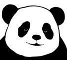
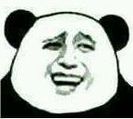
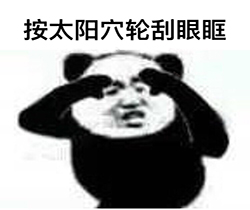
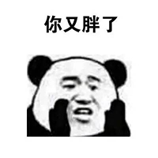

菜单
主界面
熊猫人表情
互联网早期
:) 字符表情
颜文字
qq时代
小黄人表情
“中老年”表情
兔斯基表情
绿豆蛙表情
diy时代
暴走漫画表情
微信时代
假人表情
熊猫人表情
王境泽表情
窃格瓦拉表情
等待开发...
表情起源
在2015年左右，百度贴吧的网友们意外地发现将人的表情ps在熊猫的脸上会产生意想不到的幽默效果。在此之后，熊猫人表情就意外地走红了。 但另一方面，熊猫人表情常常都显得很粗鄙。

"整容"前后的熊猫脸，顿时就显得滑稽了。
表情例子
试摘录一些较为文明的熊猫人表情：
表示我不知道
表示对对方的夸赞(戏谑)
表现童年的回忆——眼保健操

表示在思考对方的话
表示对方又变胖了

有趣的影响
2016年的
"表情包出征"
(请确保在能看中文维基百科的网络环境下) 现象中， 中国大陆网民将很多熊猫人表情包输送到了中国台湾网民的网络中，这之后两岸人民都感受到了熊猫人表情包的“魅力”。于是熊猫人表情在中国台湾省也流行了起来。
笔者的反思
熊猫人表情包可以说是非常粗鄙的了，笔者在查询较多表情之后才找到较为文明的一些。 笔者在按照时间轴查阅中国表情包流行文化的过程中发现：越是时间靠后，表情包往往越是粗鄙低俗。这或许反映了当下社会越来越浮躁的一些情绪吧。
written by: 黎思宇、 刘旭鑫
致谢开源
MDUI
开发者们